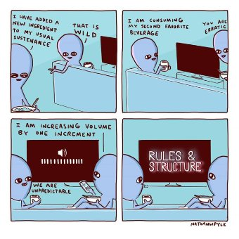

--Goethe
There’s a lot of talk about freedom these days.
Free will, free choice, free people, free society. Freedom regarding masks, vaccines, votes, schooling, body choices and leaving the house. Freedom to think and believe this or that opinion no matter how imaginary, or to revolt or follow along.
One thing's for sure: the right of individuals to be self-determining and self-ruled is a requirement. It's a right.
Freedom is obligatory.
Though of course if it’s a requirement,
that’s not free.
Still, we all need to be able to be me, right? We have to be able to be our individual selves, as we please.
Self insists on making the world, our way. Since as any spoiled toddler knows, our way is the way.
Turns out, getting what we want and only what we want- that’s what is meant by “freedom.”
Which perhaps is why Don’t tell me what to do has become the rallying cry for rage, tears, fists and fears of the future.
Because humans are at the whim of our likes and preferences.
We are owned by them.
Making us actually, completely, un-free.
(Don’t believe your friendly Mind-Tickler? Try to make yourself stop loving Trump and start loving Hillary, or vice versa. Go on; we’ll wait.)
In fact, in what moment has any person, anywhere in the world, ever been free?
What individual has ever been free of some restraint, limitation, restriction?
From the instant any living thing is born, things are done to it and for it.
Humans are no exception, and are tied from the get-go to the deliverer’s behaviors and to mom’s preferences,
In a very unfree manner.
And throughout life, even if lucky enough to live mostly as we like, individuals are always still bound by, and dependent on, the rules of that society and family.
And on luck itself. And on gravity and air. And the body. And the true nature of humanness, and life, and existence.
Seems our idea of “freedom” is so wildly, blindly selective, ignoring the most basic restrictions on every individual life form, that it’s pretty much delusional.
Still, humans do adore the notion of the individual having some power, some significance, some agency.
So we’re all about honoring the self’s wishes. We’re all about insisting those wishes are important, that they matter, and that we matter.
Seems ideas about “Freedom” strengthen the sense of self as the center of the universe.
The point around which all rotates, with those all-important preferences.
Even though, if we look for that self, except for a vague “sense,”
and who knows what the hell that is,
it can’t be found.
There’s nothing to be found.
And nothing is not separate; it encompasses everything.
It's certainly is not individual.
So it has no need for freedom.
It seems we humans want to continue fighting for a freedom that doesn’t exist, and a self that is nowhere,
just to be able to “feel like” something is real.
While meanwhile, being part-of, included-in, and done-to, anyway.
Could it be real freedom has less to do with getting everything just as the self wants, as in our way or the highway,
and more to do with no self at all?
Because there’s so much more peace in accepting, rather than fruitlessly fighting for, the non-existence of something which can’t be found.
And because like it or not, fight it or not, rage against it or not,
And regardless of any preferences,
existence is as it is.
As it is.
While the self is as it is not.
Which wonderfully, thankfully, ironically,
allows a freedom
to not be me.
Which may just be
the only freedom possible.
Click here to watch Judy on Buddha at the Gas Pump
“Freedom does not mean getting to do whatever one wishes. Nor does freedom have anything to do with so-called ‘free will’, which is a fantasy. Freedom arises with the understanding that in each moment what is, is, and cannot be different. The ‘myself’ who chooses is a fiction, a story I have learned. In that admission one may find freedom — not the freedom to ‘choose’, but the freedom to be.”
--Robert Saltzman
"Let no one say the Tathagata cherishes the idea: I must liberate all living beings. Allow no such thought. Because in reality there are no living beings to be liberated by the Buddha. If there were living beings for the Buddha to liberate, He would partake in the idea of selfhood, personality, entity, and separate individuality.
Please close the door behind you as you leave."
--Diamond Sutra
